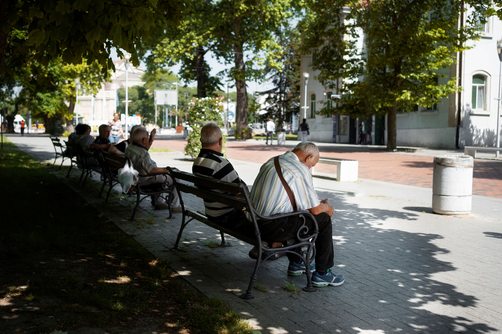
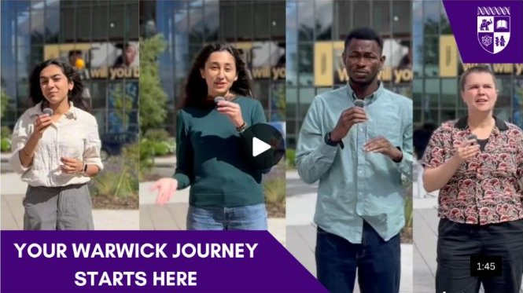
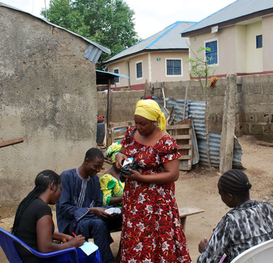
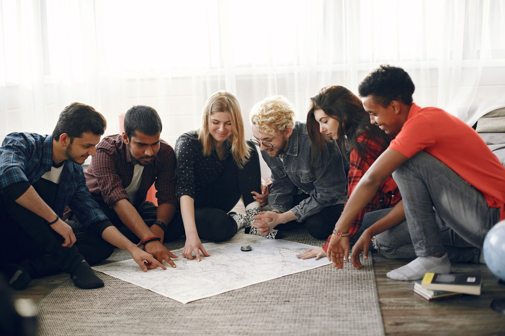
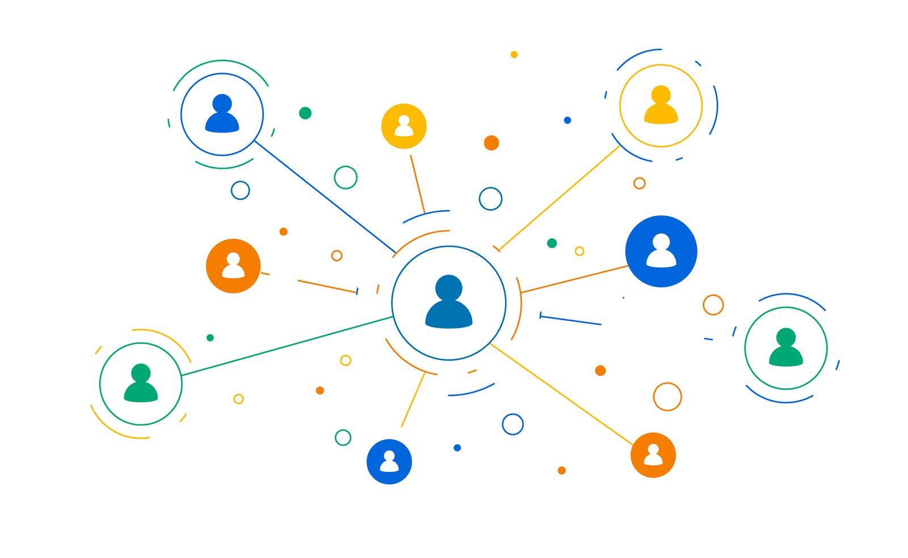
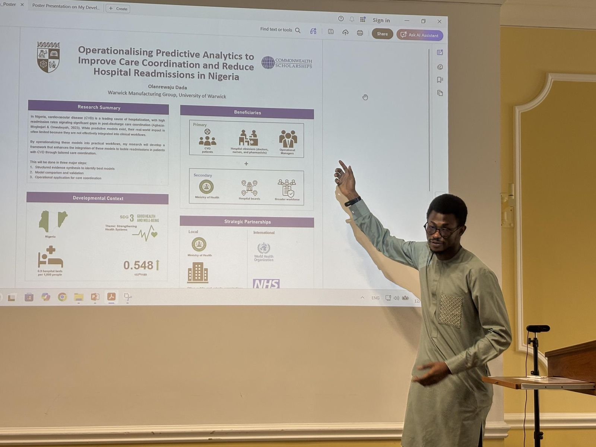
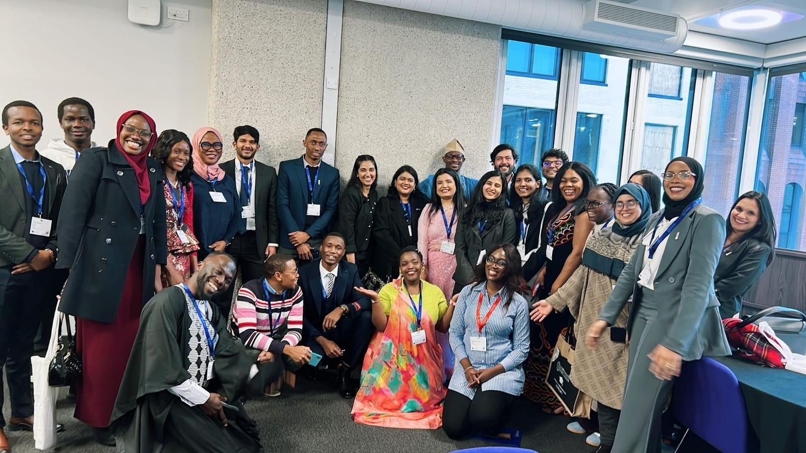
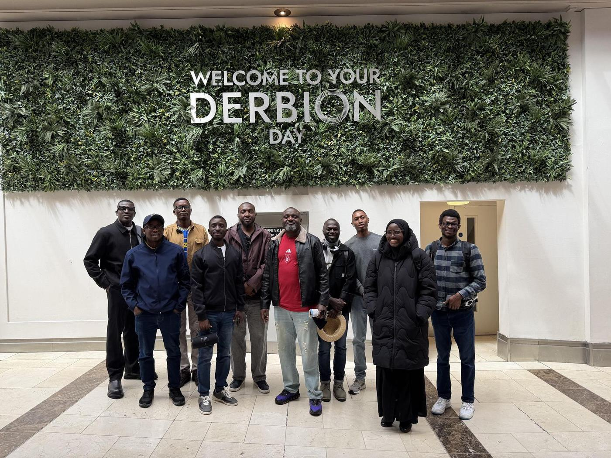

View project ↗Neighbourhood Park Project
Role Project Manager, Neighbourhood Health Parks CIC
Socially prescribed, trainer-led physical activity for adults aged 55+, from feasibility study design to delivery planning.
Health Researcher · Qualitative & Mixed Methods
I’m Olanrewaju Dada, a health researcher with a background in microbiology, software engineering and healthcare operations. I study how care and technology can fit the lives, cultures and workflows of the people they serve — starting with those people.
Currently exploring digital health and health services research
Selected projects
Showing 6 of 8

View project ↗Role Project Manager, Neighbourhood Health Parks CIC
Socially prescribed, trainer-led physical activity for adults aged 55+, from feasibility study design to delivery planning.
Role Project Officer, Warwick International Higher Education Academy
Pulse-survey analysis, the annual report and launch content for a 1,000+ member community.

View project ↗Role Project Officer, University of Warwick
Redesigning the orientation course for international students, co-produced with the students themselves.
Role Project Officer, University of Warwick
A toolkit helping Warwick staff understand and support international students, built from staff and student insight.
Role Quality Improvement Volunteer with the Patient Insights and Involvement Team, UHCW Improvement Team and Coventry Neighbourhood Health Team
Focus groups, interviews, data analysis and stakeholder mapping and engagement

View project ↗Role Field Data Assistant, SCIDaR (for IHVN)
Programme data support for IHVN’s HIV and TB/HIV services across four Nigerian states.

View project ↗Role Research Facilitator, Nigerian Institute of Medical Research
Interviews, focus groups and co-designed digital resources to improve uptake among young people.

View project ↗Role Project Data Assistant, Akesis Health
Data support for the national network that moves HIV and TB specimens from health facilities to laboratories.
No projects match this filter yet.
Publications
Reviews in progress and completed research. The full, up-to-date list is on Google Scholar.
View on Google ScholarMethods & skills
In the field
Photos featuring others are shared with consent.


